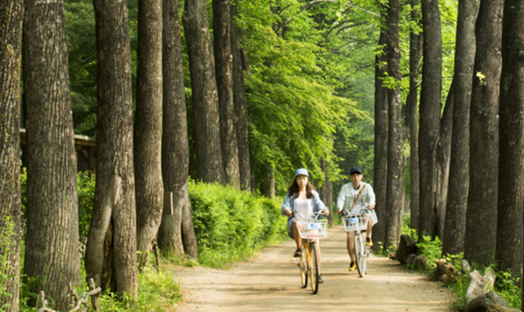
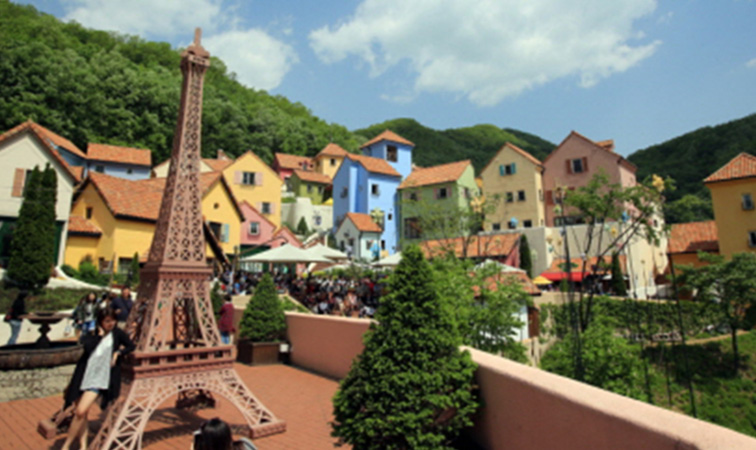
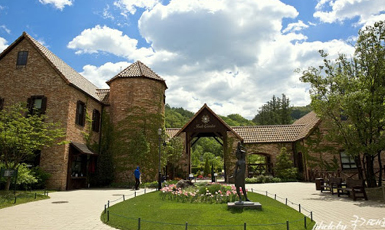
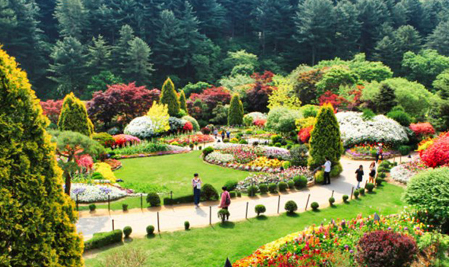
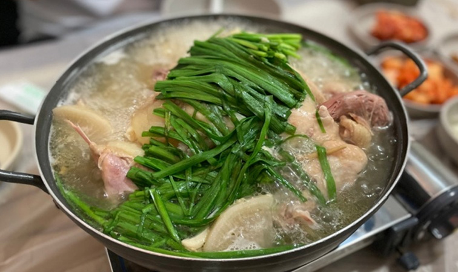
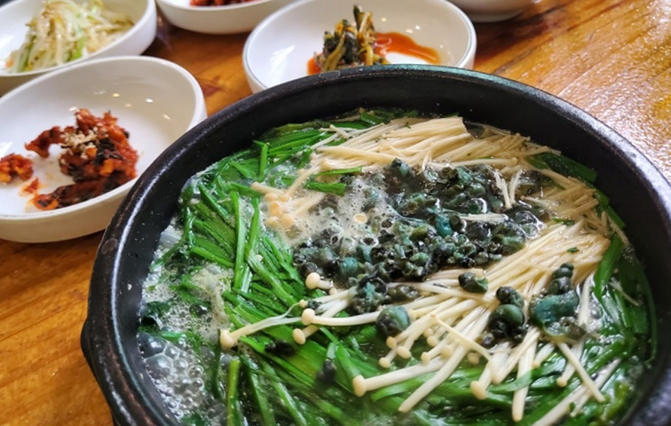
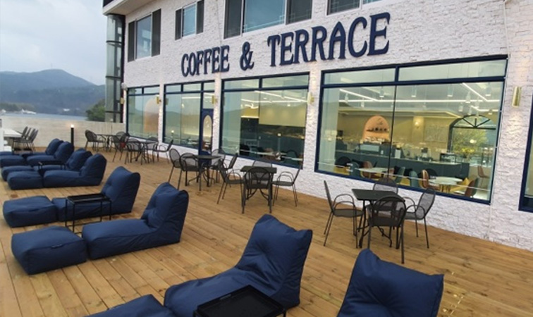

Tourist Spot
-

1. 남이섬 펜션에서 차량으로 10분거리
남이섬은 1944년 청평댐을 만들 때 북한강 강물이 차서 생긴 경기도와 강원도 경계에 있는 내륙의 섬이다. 1965년 수재 민병도 선생(1916~2006)이 토지를 매입, 모래뿐인 불모지에 다양한 수종의 육림을 시작하였다. 1966년 경춘관광개발주식회사를 설립, 종합 휴양지로 조성하여 오던 중, 90년대 말 금융위기로인한 불황을 극복하고자 2000년 4월 주식회사 남이섬으로 상호를 변경하여 관리해 오고 있다. 2001년부터 [문화예술 자연생태의 청정정원] 역할로서 재창업을 선언하고 경영정상화를 이루어 나가면서 환경과 문화예술 관련 콘텐츠에 집중 투자하기 시작 하였다.
-

2. 쁘띠프랑스 펜션에서 차량으로 15분거리
청평댐에서 남이섬 방향으로 호숫가 길을 따라 10km쯤 가다 보면 왼쪽 언덕에 이국적 건물들이 옹기종기 모여 있는 걸 볼 수 있다. 건물만 보면 지중해 연안의 마을 같기도 하고 호명산의 수려한 주위 배경과 함께 보면 마치 알프스 산록의 전원마을 같은 이곳은, 프랑스 문화마을 쁘띠프랑스이다. 쁘띠프랑스의 컨셉트는 ''꽃과 별, 그리고 어린왕자'' 이다. 쁘띠프랑스는 청소년수련시설(고성청소년수련원)을 겸한 프랑스 문화마을로, 가평군 청평면 고성리 일대에 조성됐다. 쁘띠프랑스는 프랑스풍 건물로 이루어져 있으며 관람객들은 숙박을 하면서 프랑스의 의식주 문화를 체험할 수 있다.
-

3. 제이드가든 펜션에서 차량으로 15분거리
‘숲 속에서 만나는 작은 유럽’을 모토로 한 제이드가든은 제이드팰리스 골프장 부근 약 16만㎡ 규모로 24개의 테마로 조성됐다. 제이드가든은 자연의 계곡 지형을 그대로 살려 화훼나 수목, 건축 양식과 건물 배치 등을 유럽풍에 맞추었다. 약 5만평의 규모로 계곡 사이의 지형을 따라 길게 이어지며, 만병초류와 단풍나무류 붓꽃류 블루베리 등 3,000종의 식물을 보유하고있다. 또한 드라이가든과 웨딩가든 이끼원, 로도덴드론가든 등 모두 24개의 분원으로 나뉘어져 있다. 강렬한 원색보다는 수수하고 은은한 멋을 뽐내는 화훼류 위주로 채워졌으며, 계곡의 우거진 산림 그대로의 멋을 살린 것이 특징이라 할 수 있다.
-

4. 아침고요수목원 펜션에서 차량으로 25분거리
아침고요수목원은 축령산의 빼어난 자연경관을 배경으로 하여 한국의 미를 듬뿍 담은 정원들을 원예학적으로 조화시켜 설계한 원예수목원이다. 여러 가지 특색 있는 정원을 갖추고 있고, 울창한 잣나무숲 아래에서 삼림욕을 즐길 수도 있어 도시민들에게 쉼터를 제공한다. 설계자(한상경, 삼육대학교 원예학 교수)가 명명하였으며, 1996년 5월에 개원하였다. 20개의 주제를 가진 정원은 아름답게 가꾸어진 잔디밭과 화단, 자연스러운 산책로로 연결되어 있다. 특히, 아름다운 대한민국의 금수강산을 실제 한반도지형 모양으로 조성하여 최고 절정의 꽃으로 표현한 하경정원 (Sunken Garden)은 관광객들의 관심을 가장 많이 끄는 곳이다.
Food
-
현지인 추천 맛집 리스트 01. 힐링 닭갈비
국내산 재료만 취급하는 남이섬 1등 철판 닭갈비집! 닭갈비 다 먹고 볶음밥까지 필수~!
- 0507-1400-5402
- 경기 가평군 가평읍 북한강변로 1083 힐링닭갈비
- 매일 10:00 - 21:00
- 단체석, 주차, 포장, 예약, 반려동물 동반, 남/녀 화장실 구분
-

현지인 추천 맛집 리스트 02. 동기간
생방송투데이, 수요미식회 등 다수의 TV방송에서도 인정한 진한 닭백숙 맛집!
- 031-581-5570
- 경기 가평군 가평읍 보납로 459-158 동기간
- 평일 11:00 - 20:00 명절 휴무 브레이크타임 16:20~17:00 주말 10:30 - 21:00
- 단체석, 주차, 포장, 예약
-

현지인 추천 맛집 리스트 03. 자연다슬기해장국
된장국 베이스에 다슬기와 부추, 버섯이 가득 들어 있는 속 풀리는 시원한 해장국!
- 031-582-4210
- 경기 가평군 북면 가화로 769 다슬기해장국
- 매일 08:00 - 20:30 비정기 휴무
- 단체석
-

현지인 추천 맛집 리스트 04. 카페앤
뷰맛집 힐링 카페! 커피를 통해 잠시나마 마음의 여유를 즐겨 보세요
- 0507-1355-0180
- 경기 가평군 가평읍 북한강변로 1016 2층
- 매일 10:00 - 19:00 / 주말 10:00 - 20:00
- 단체석, 주차, 포장, 예약, 남/녀 화장실 구분, 지역화폐가능